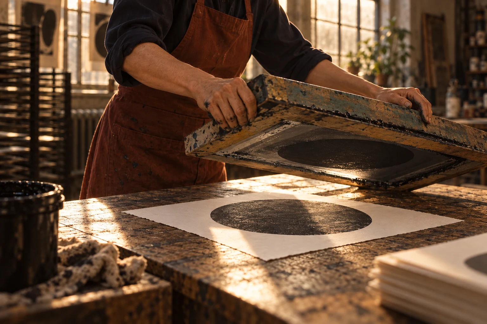

Creative & production
Develop the treatment, keep the client conversation coherent and organise the practical scope.
Berlin, Germany / nine-person concept studio
Signal Fold Pictures is a fictional nine-person creative and production studio, working with European commercial and cultural teams on short-form films.
The intended projects are a workshop portrait, a carefully observed product or a cultural gathering. A small senior core connects the first treatment to the production plan and the edit.
Freelance collaborators are brought into a separately agreed scope when a production needs additional camera, sound, art or finishing expertise. This concept does not claim an unlimited crew or a worldwide production network.
Our work begins with an audience and a reason to look. Format and technique follow that reason, with clear boundaries around access, schedule and delivery.

The fictional core team
Develop the treatment, keep the client conversation coherent and organise the practical scope.
Translate the shot intention into a feasible setup, coverage plan and production handover.
Shape the story in the edit and prepare the agreed versions, with clear review and delivery records.
This is a concept company. The team structure explains a proposed working model; it does not represent real employees, past clients or screen credits.